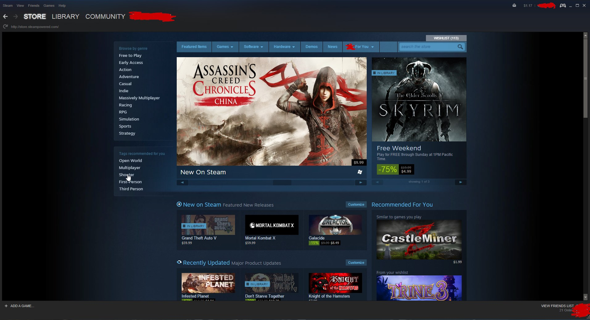

Gaming Parties!


Steam is a digital distribution platform developed by Valve Corporation, which offers digital rights management (DRM), multiplayer gaming, video streaming and social networking services. Steam provides the user with installation and automatic updating of games, and community features such as friends lists and groups, cloud saving, and in-game voice and chat functionality. The software provides a freely available application programming interface (API) called Steamworks, which developers can use to integrate many of Steam's functions into their products, including networking, matchmaking, in-game achievements, micro-transactions, and support for user-created content through Steam Workshop. Though initially developed for use on Microsoft Windows operating systems, versions for OS X and Linux were later released. Mobile apps with connected functionality with the main software were later released for iOS, Android, and Windows Phone devices in the 2010s. The Steam platform is the largest digital distribution platform for PC gaming, estimated in 2013 to have 75% of the market space. By 2017, users purchasing titles through Steam totaled roughly $4.3 billion, representing at least 18% of global PC game sales. By early 2018, the service had over 150 million registered accounts with a peak of 18.5 million concurrent users online. The success of the Steam platform has led to the development of a line of Steam Machine microconsoles, as well as the SteamOS operating system.

The Steam client, showing the storefront page.
A top of the line gaming PC, coincides with how well the games on the steam store actually run.